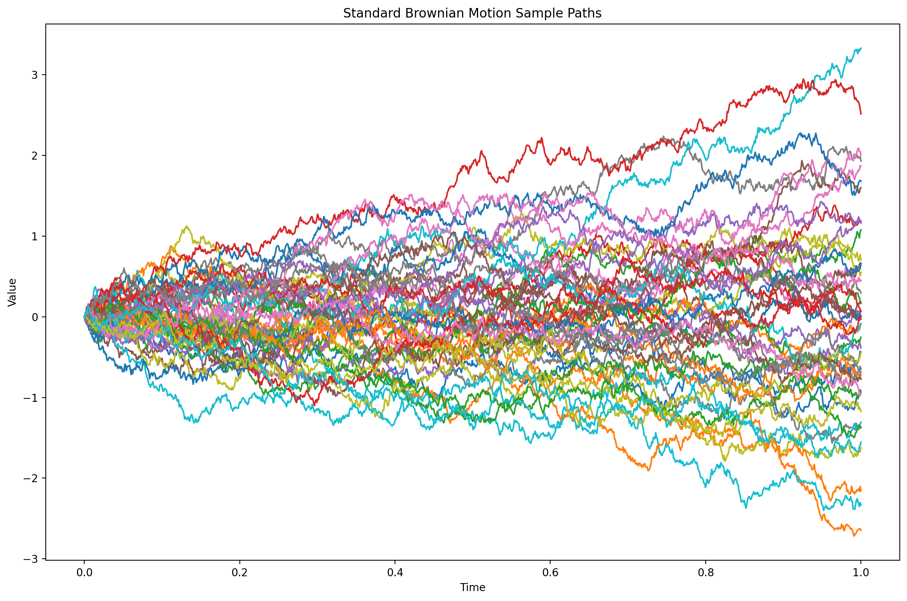
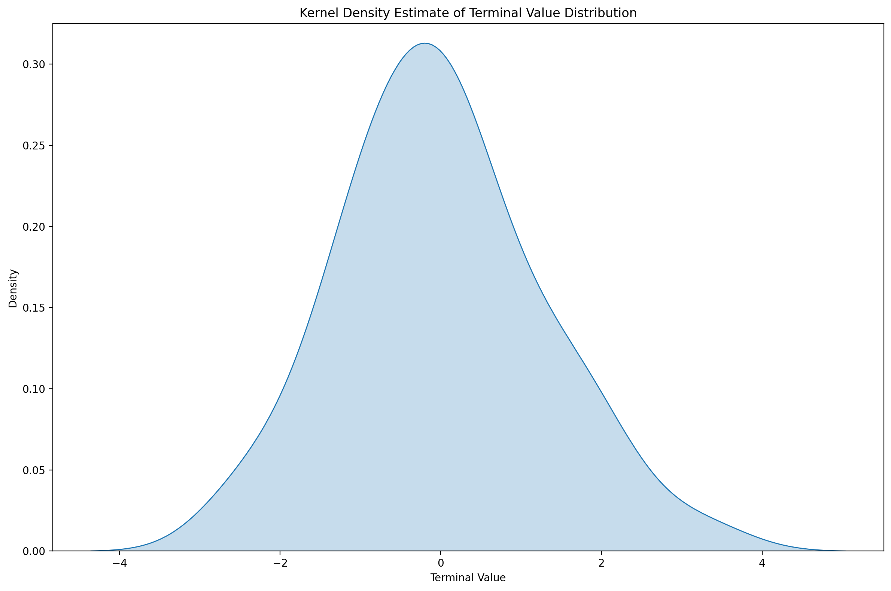
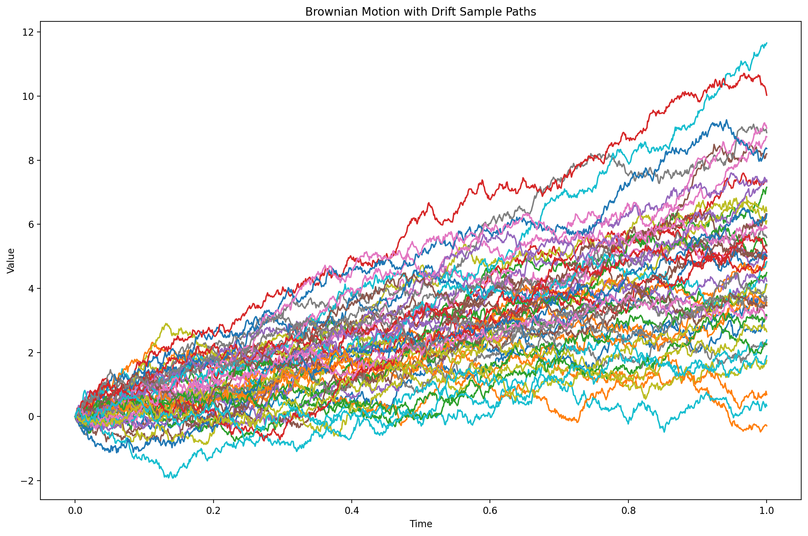

Python · NumPy · stochastic processes
Brownian motion simulator for stochastic paths.
A compact scientific Python project that generates Brownian sample paths, compares standard and drifted dynamics, and visualizes the terminal value distribution.
time points over a normalized interval
sample paths generated from seeded noise
saved figures for paths, drift, and terminal density
Project focus
A small quant-oriented simulation, presented plainly.
The repository emphasizes reproducible numerical simulation, clear plotting, and a readable implementation. It is intentionally narrow: build the time grid, sample Gaussian noise, accumulate Brownian increments, then save figures that make the process visible.
Generated outputs
The simulation results are the main interface.



Implementation
Simple construction, visible assumptions.
The code uses a seeded NumPy generator, builds a uniform time axis, and accumulates increments. The drifted process follows the same structure with explicit drift and diffusion parameters.
W(t + dt) = W(t) + sqrt(dt) · Z
X(t + dt) = X(t) + μdt + σsqrt(dt) · Z
Z ~ N(0, 1)
Run locally
Generate the figures from the command line.
uv sync
uv run python main.py
uv run python brownian_motion_sim.py --points 2000 --paths 100 --seed 7 --output-dir figures